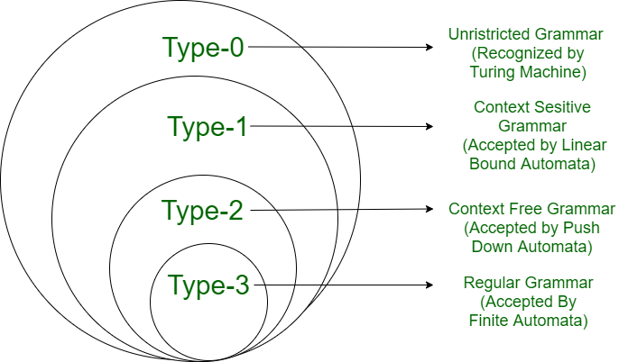

Chomsky Hierarchy in Theory of Computation
According to Chomsky hierarchy, grammar is divided into 4 types as follows:
- Type 0 is known as unrestricted grammar.
- Type 1 is known as context-sensitive grammar.
- Type 2 is known as a context-free grammar.
- Type 3 Regular Grammar.

Type 0: Unrestricted Grammar:
Type-0 grammars include all formal grammar. Type 0 grammar languages are recognized by turing machine. These languages are also known as the Recursively Enumerable languages.
Grammar Production in the form of α \to \ β where
α
is ( V + T)* V ( V + T)*
V : Variables
T : Terminals.
In type 0 there must be at least one variable on the Left side of production.
For example:
Sab --> ba
A --> S
Here, Variables are S, A, and Terminals a, b.
Type 1: Context-Sensitive Grammar
Type-1 grammars generate context-sensitive languages. The language generated by the grammar is recognized by the Linear Bound Automata
In Type 1
First of all Type 1 grammar should be Type 0.
Grammar Production in the form of
For Example:
S --> AB
AB --> abc
b
Type 2: Context-Free Grammar:
Type-2 grammars generate context-free languages. The language generated by the grammar is recognized by a Pushdown automata. In Type 2:
First of all, it should be Type 1.
The left-hand side of production can have only one variable and there is no restriction on β
For example:
S --> AB
A --> a
B --> b
Type 3: Regular Grammar:
Type-3 grammars generate regular languages. These languages are exactly all languages that can be accepted by a finite-state automaton. Type 3 is the most restricted form of grammar.
Type 3 should be in the given form only :
V --> VT / T (left-regular grammar)
(or)
V --> TV /T (right-regular grammar)
There is another form of regular grammar called extended regular grammar. In this form:
V --> VT* / T*. (extended left-regular grammar)
(or)
V --> T*V /T* (extended right-regular grammar)